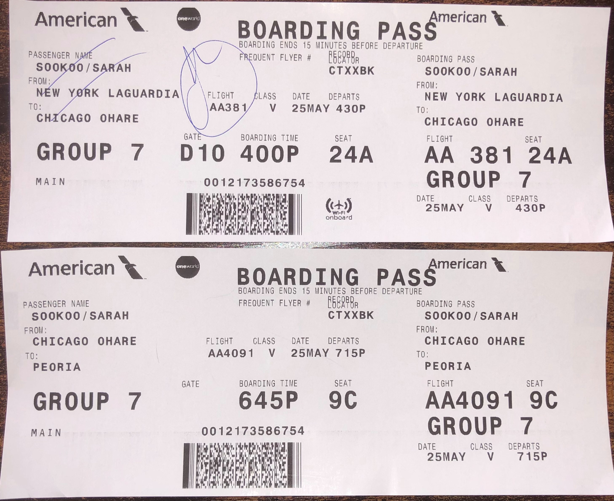

May 25th - May 30th
These 6 days I decided to take a vacation at Peloria, Illinois. My cousin moved out of my aunt's home in Queens to go live in Peloria for her job so I took a trip to help her out. Most of it was buying new furniture and setting up the apartment. This was a great way to get out of the house after school ended.
May 25th

This day was literally filled with traveling and it was so hectic. First I had to wake up at 8am because my dad had something to pick up in Manhattan and he wanted me to go with him. I got ready and ate breakfast. We left home at 8:30 because we had to be there for 9:30 and it takes around 45 minutes to get there. Once we got there, parking was HORRENDOUS. We did what we had to do and then we were on our way back home. We arrived home at about 11:20 and I planned to leave again at 1:20. I did some final packing, rested, called Tanmoy and did my makeup during the meantime. Then it was time to go. My dad and I packed the car and we stopped at Dunkin' Donuts to get 2 bagels. Next we went to pick my mom up from work and we were finally on our way to the airport ✈. The traffic there was SO bad. I was literally freaking out so much thinking I was going to miss my flight. We had a whole prayer session in the car and I calmed down a bit. Once we got to the airport I checked in and printed my boarding pass. Next I went through customs where they scanned me and my things.
That process was really fast but it went well. After that all I had to do was find my gate which was D10. It was quite a walk but I didn't get lost. I sat at the gate at 3:12 and we were going to start boarding the plane at 4:00 so that was perfect. Everything went well, I boarded the plane, put my carry on luggage on top, and sat at my window seat. The flight went amazing as we landed in Chicago earlier than expected and the landing didn't bother my ears that much. Then once I deboarded, I had to find the gate H2 for the next flight to Peoria. That process was also smooth. The Chicago airport is like the one you see in movies. Once I found the gate and knew where I had to be, I decided to explore a bit. I had enough time until boarding so I walked around, saw some Chicago food attractions, bought some tea, and used the restroom. Then it was boarding time again at 6:45 (Illinois time)! This plane was SO small so they checked in my carry on luggage was a valet bag for free. The plane was so small that I couldn't even stand up straight. Crazy. This flight also landed early but we took some time to exit the plane. Once I exited, I got my luggage and I saw my cousin! We drove home and I ate some paneer tikka masala that she cooked for dinner. We talked for a while, I showered and then I was off to bed! Also, Illinois is one hour behind New York so my day was 25 hours long!! It was a very long (literally), busy, hectic, tiring, kinda scary, but fun day!
May 26th
Today once I woke up, I checked my phone for a while and just stayed in bed. Tanmoy and I called for a bit and I gave him a small tour of the apartment. Then I got ready for the day and had waffles and fruits for breakfast.